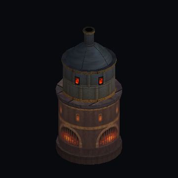
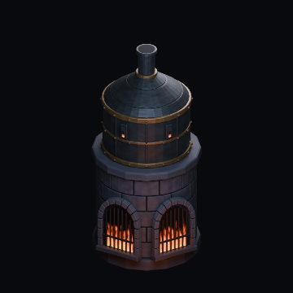
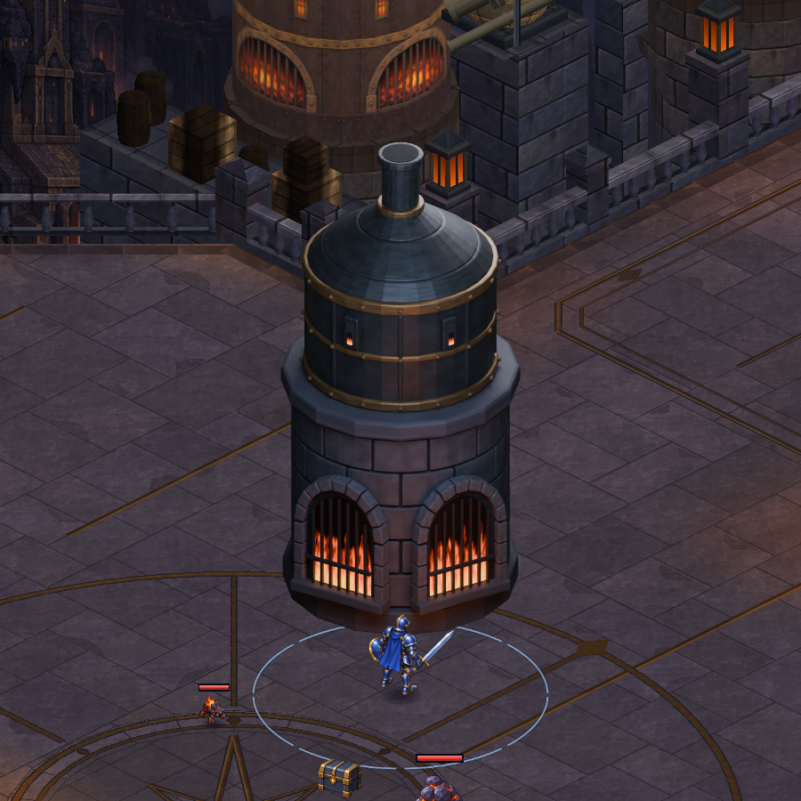
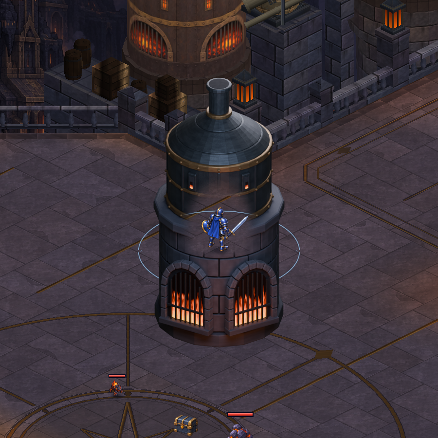
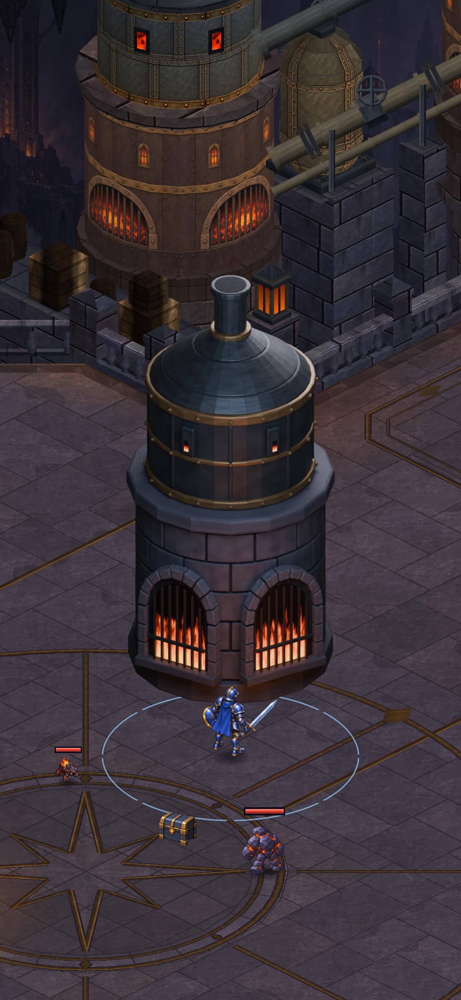

CRYPTFORGE · BLENDER DENEMESİ 02 · 09 EKİM 2026
Kemer, taş ve ateş birlikte.
İlk örneğin metal ışığını koruyarak kemerli açıklıkları ve üst kontrol pencerelerini geri getirdik. Ateş altta yoğunlaşıyor; açıklığın üstü koyu kalıyor. Aşağıdaki görüntüler gerçek Unity yakalamalarıdır.

Mevcut oyun fırını
Yeni kemerli örnek · 360 pxOyun zemini üzerinde deneme
Yeni görüntü, avluda geçici bir noktaya yerleştirildi. Bu testte kahramanı kontrollü konumlara aldık; mevcut fırınlar değiştirilmedi. Karşılaştırma için saydamlaşmayı açıp kapatabilirsin.

Önde: fırın gereksiz yere saydamlaşmıyor.
Arkada: mevcut oyun sistemi kahramanı görünür tutuyor.İlerleme var; henüz telefona yüklenmedi.
Kemerler ve ateş ilk örnekten daha iyi uyum sağlıyor. Zemin temas gölgesi, çevre ışığı, boru bağlantıları, yan açılardaki derinlik ve mobil sıkıştırma hâlâ yapılmalı. Bu denemedeki ateş sabit bir render; animasyon değil.
Dikey ölçekte görünüm
Oyunun kamera boyutu korundu, inceleme için kamera bu noktaya taşındı ve HUD gizlendi. Bu bir telefon ekran görüntüsü veya oynayarak geçiş testi değildir.

1080 × 2340 · Unity sahne yakalaması
Doğrulama ve kaynak
Grafik testi başarılı: önde saydamlaşma farkı 0 piksel; arkada 22.410 piksel ve kahramanın görünürlüğü değişiyor. Proje bütünlük kontrolü başarılı.
Blender kaynak model: 11.928 vertex / 23.104 üçgen. Unity denemesinde model yerine 4 köşeli bir yüzey ve 1200 px render kullanıldı. Mobil bellek ve performans onayı henüz yok.
Blender kaynağı · Şeffaf büyük render · Teknik kayıt · İlk çalışma